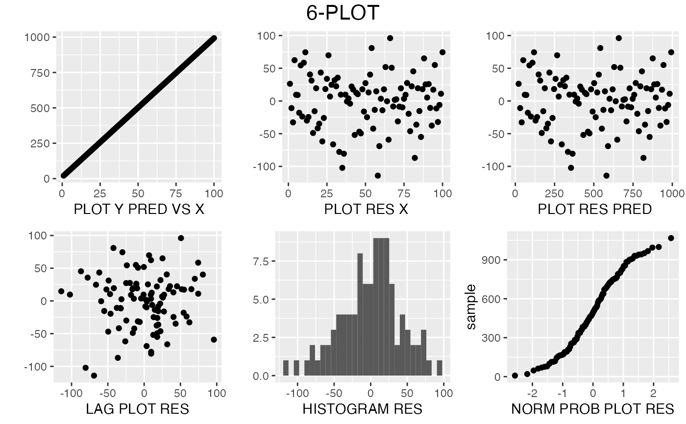

sixPlot.RdThe 6-plot is a collection of 6 specific graphical techniques whose purpose is to assess the validity of a Y versus X fit. It returns a list of 6 plots;
sixPlot(X, Y, bins=30)A list of X values.
A list of Y values.
Number of bins to show in the histogram.
A frame with 6 plots.
The 6-plot outputs a 6plot object with six plots. A method is provided to print them in a frame. The plots are named scat_plot, res_x_plot, res_pred_plot,lag_res_plot, hist_res_plot and qq_plot. The model is a linear fit.
scat_plot uses geom_point()
res_x_plot uses geom_point()
res_pred_plot uses geom_point()
lag_res_plot uses geom_point()
hist_res_plot uses geom_histogram()
qq_plot uses geom_qq()
X <- 1:100
Y <- rnorm(100, X * 10, 50)
sixPlot(X, Y)
